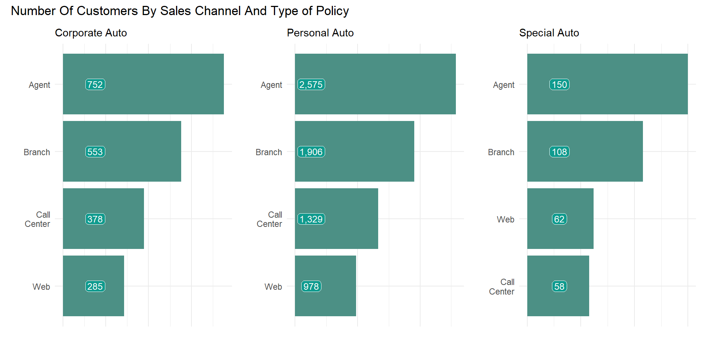
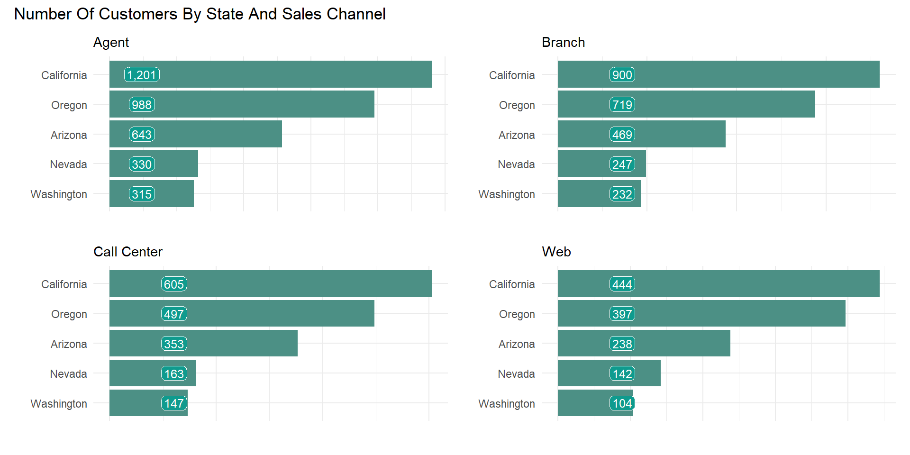
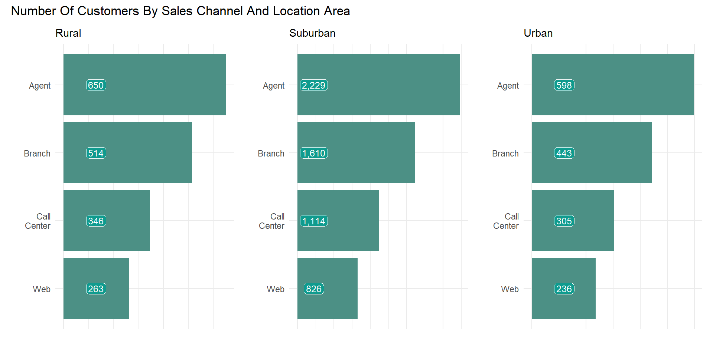
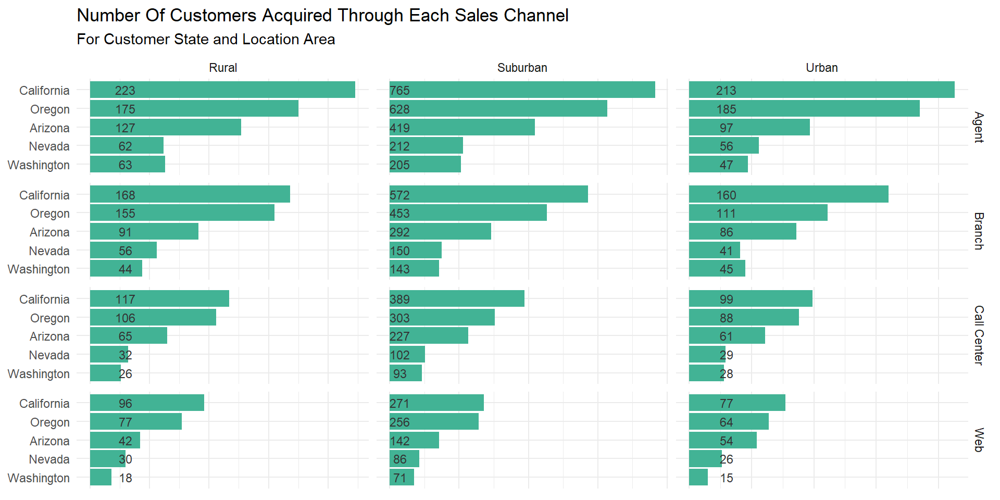
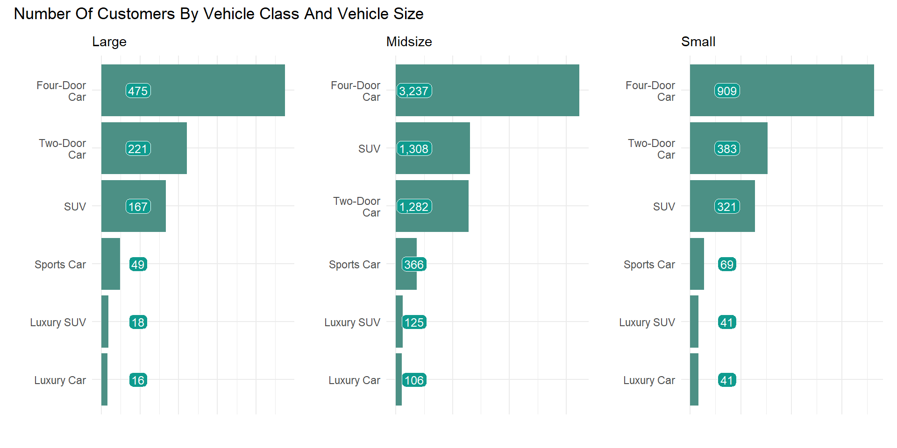
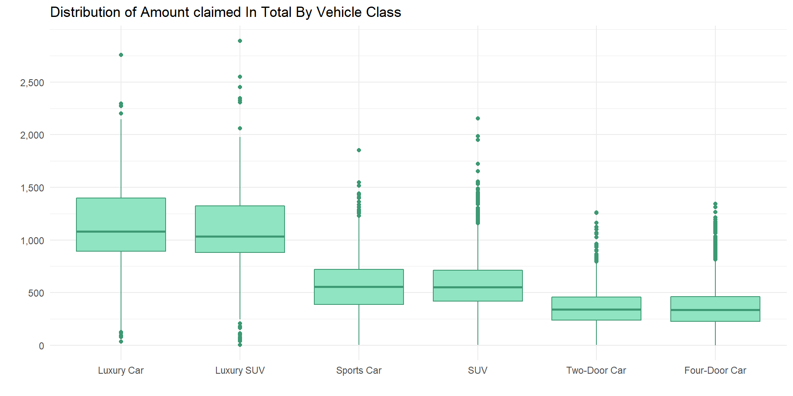
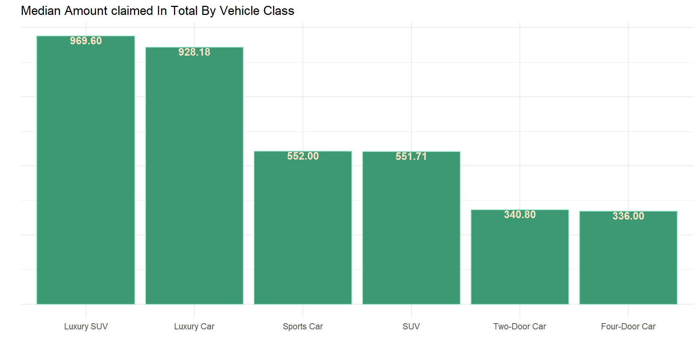
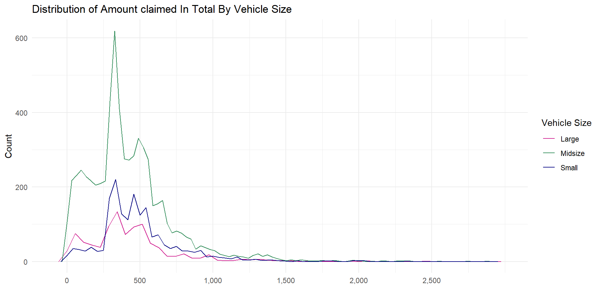
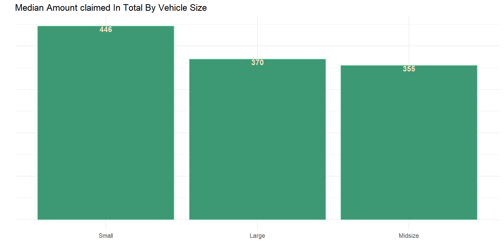
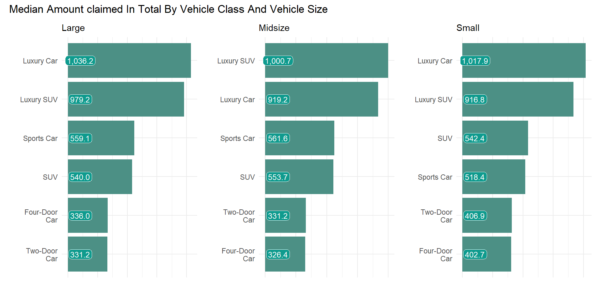

count_obs2(data, sales_channel, policy_type)
More policies was sold through agent channel for all policy type, this is followed by the company’s branches. The company acquired few customers through the company’s website and other online platforms for both corporate and personal policies while call center brought in the lowest number of special auto policyholder.
count_obs2(data, sales_channel, state)
The highest number of policy sales was through the company’s agents, this is followed by Branch, Call Centers and online platforms.
count_obs2(data, sales_channel, location_code)
The most successful sales channel for the company was sales agent, it sold more policies in all location area. policies sold through online platform had the least success in all locations.
data %>%
group_by(sales_channel, location_code, state) %>%
count(name = "count") %>%
ggplot(aes(count, fct_reorder(state, count))) +
geom_col(fill = "#42b395") +
facet_grid(rows = vars(sales_channel),
cols = vars(location_code),
scales = "free") +
geom_text(aes(label = count, x = 30), size = 3, color = "gray20") +
ggtitle("Number Of Customers Acquired Through Each Sales Channel",
"For Customer State and Location Area") +
theme_minimal() +
theme(axis.title = element_blank(), axis.text.x = element_blank()) 
Given the above analysis on customer state and location code, the most number policies where sold in the Suburban area of California through the agent channel while the least number of policies sold was in the urban area of Washington.
count_obs2(data, vehicle_class, vehicle_size)
There are more midsize cars with four doors, two doors and SUV than other car sizes, while there are more small cars with sport cars, luxury SUV and luxury cars than other car sizes.
num_cat_dis(data, total_claim_amount, vehicle_class)
num_cat_sumy(data, total_claim_amount, vehicle_class, outlier = c("slo", "suo"))
Luxury and higher level class car owners claimed more in total than other cars. four-door and two-door car owners have the lowest claim amount.
num_cat_dis(data, total_claim_amount, vehicle_size, p_typ = "fqp")
num_cat_sumy(data, total_claim_amount, vehicle_size, outlier = c("slo", "suo"))
Midsize vehicles have the lowest median claim amount while small vehicle have the highest median claim amount.
num_cat_sumy2(data,
total_claim_amount,
vehicle_class,
vehicle_size,
outlier = c("slo", "suo"))
Four doors cars owners have the least claim amount on an average for midsize and small vehicles while two door cars owners have the least average claim amount for large vehicles.
Previous Analysis On Number Of Policies
Owned By policyholders
Next Analysis On Types of Auto Policy and Customer
Income